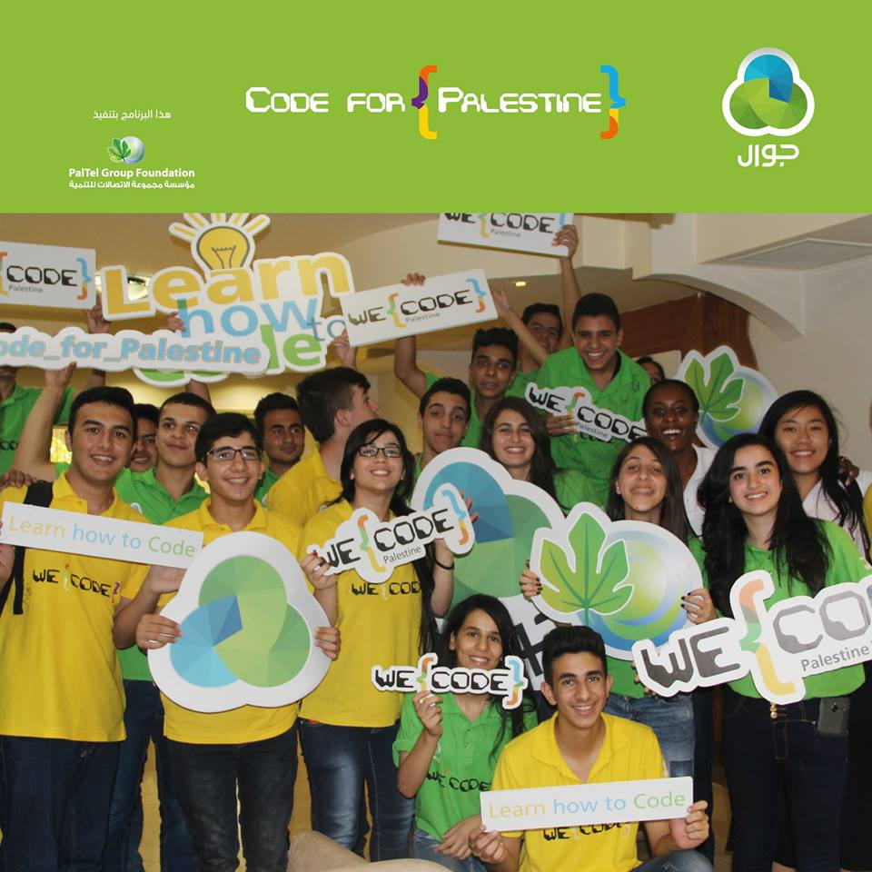
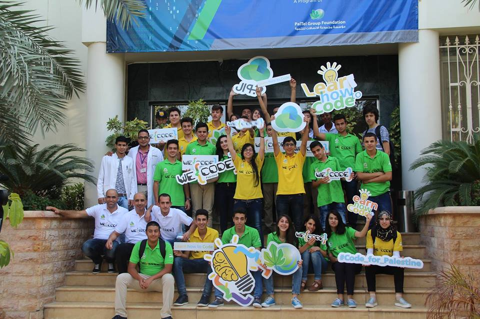
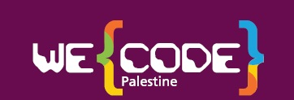

{% extends "base.html" %}
{% block body %}


we code is not just about learning and studying we code is for you as a person to make you believe in your self that you can do whatever you want. It gave us better chances for our future “exactly what I was looking for”.

{% endblock %}